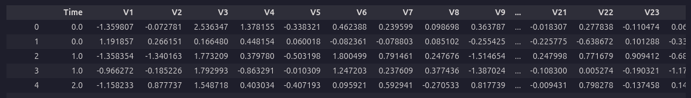
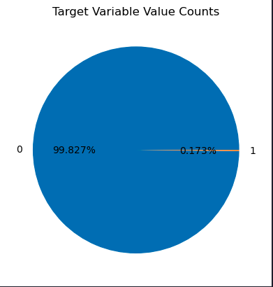

Credit Card Fraud Detection with Decision Trees and SVM

Estimated reading time: ~10 minutes
Credit Card Fraud Detection with Decision Trees and SVM
Objectives
- Perform basic data preprocessing in Python
- Model a classification task using Scikit-Learn
- Train Support Vector Machine and Decision Tree models
- Assess model quality
Introduction
This article demonstrates how to use Decision Tree and Support Vector Machine models to identify fraudulent credit card transactions using a real dataset. The dataset is highly unbalanced, with only a small fraction of transactions being fraudulent.
Import Libraries
import pandas as pd
import matplotlib.pyplot as plt
from sklearn.model_selection import train_test_split
from sklearn.preprocessing import normalize, StandardScaler
from sklearn.utils.class_weight import compute_sample_weight
from sklearn.tree import DecisionTreeClassifier
from sklearn.metrics import roc_auc_score
from sklearn.svm import LinearSVC
import warnings
warnings.filterwarnings('ignore')Load the dataset
url= "https://cf-courses-data.s3.us.cloud-object-storage.appdomain.cloud/IBMDeveloperSkillsNetwork-ML0101EN-SkillsNetwork/labs/Module%203/data/creditcard.csv"
raw_data=pd.read_csv(url)
raw_data.head()
Dataset Analysis
labels = raw_data.Class.unique()
sizes = raw_data.Class.value_counts().values
fig, ax = plt.subplots()
ax.pie(sizes, labels=labels, autopct='%1.3f%%')
ax.set_title('Target Variable Value Counts')
plt.show()
Feature Correlation
correlation_values = raw_data.corr()['Class'].drop('Class')
correlation_values.plot(kind='barh', figsize=(10, 6))
Dataset Preprocessing
raw_data.iloc[:, 1:30] = StandardScaler().fit_transform(raw_data.iloc[:, 1:30])
data_matrix = raw_data.values
X = data_matrix[:, 1:30]
y = data_matrix[:, 30]
X = normalize(X, norm="l1")Train/Test Split
X_train, X_test, y_train, y_test = train_test_split(X, y, test_size=0.3, random_state=42)Build a Decision Tree Classifier
Desciption
The decision tree classifier algorithm, as introduced by J. R. Quinlan (1986), constructs a tree structure where each internal node represents a test on an attribute, each branch represents an outcome of the test, and each leaf node represents a class label. The algorithm recursively splits the dataset based on the attribute that provides the highest information gain (or another splitting criterion), aiming to maximize the separation of classes at each step.
Mathematical Summary
At each node, the algorithm selects the attribute ( A ) that maximizes the information gain:
\[ \text{Gain}(S, A) = \text{Entropy}(S) - \sum_{v \in \text{Values}(A)} \frac{|S_v|}{|S|} \text{Entropy}(S_v) \]
where ( S ) is the set of training examples at the node, ( S_v ) is the subset of ( S ) where attribute ( A ) has value ( v ), and Entropy is defined as:
\[ \text{Entropy}(S) = -\sum_{c \in \text{Classes}} p_c \log_2 p_c \]
with ( p_c ) being the proportion of class ( c ) in ( S ).
Pseudocode
function DecisionTree(S, Attributes):
if all examples in S belong to the same class:
return a leaf node with that class
if Attributes is empty:
return a leaf node with the majority class in S
A = attribute in Attributes with highest information gain
create a decision node that splits on A
for each value v of A:
Sv = subset of S where A == v
if Sv is empty:
add a leaf node with the majority class in S
else:
add subtree DecisionTree(Sv, Attributes - {A})
return the decision node“Implementation(Call)”
w_train = compute_sample_weight('balanced', y_train)
dt = DecisionTreeClassifier(max_depth=4, random_state=35)
dt.fit(X_train, y_train, sample_weight=w_train)Build a Support Vector Machine model
Description
The Support Vector Machine (SVM) classifier is a supervised learning algorithm that finds the optimal hyperplane separating data points of different classes with the maximum margin. SVM focuses on the data points closest to the decision boundary, called support vectors. The algorithm can be extended to handle non-linear boundaries using kernel functions.
Mathematical Summary
Given a set of training data ((x_i, y_i)), where (x_i ^n) and (y_i {-1, 1}), the SVM solves the following optimization problem:
\[ \min_{w, b} \frac{1}{2} \|w\|^2 \] subject to: \[ y_i (w^T x_i + b) \geq 1 \quad \forall i \]
For non-linearly separable data, slack variables (_i) and a penalty parameter (C) are introduced:
\[ \min_{w, b, \xi} \frac{1}{2} \|w\|^2 + C \sum_{i=1}^N \xi_i \] subject to: \[ y_i (w^T x_i + b) \geq 1 - \xi_i, \quad \xi_i \geq 0 \]
The decision function for a new point (x) is: \[ f(x) = \text{sign}(w^T x + b) \]
With kernels, the inner product (x_i^T x_j) is replaced by (K(x_i, x_j)).
Pseudocode
Input: Training data (x_i, y_i), kernel function K, penalty parameter C
1. Formulate the optimization problem:
Maximize:
L(α) = Σ α_i - 0.5 ΣΣ α_i α_j y_i y_j K(x_i, x_j)
Subject to:
0 ≤ α_i ≤ C, Σ α_i y_i = 0
2. Solve for α_i (using quadratic programming)
3. Compute w = Σ α_i y_i x_i (for linear case)
4. Compute b using support vectors
5. For a new input x:
Compute f(x) = sign(Σ α_i y_i K(x_i, x) + b)
Assign class label based on sign
Output: Decision function f(x)“Implementation(Call)”
svm = LinearSVC(class_weight='balanced', random_state=31, loss="hinge", fit_intercept=False)
svm.fit(X_train, y_train)Evaluate the Decision Tree Classifier
y_pred_dt = dt.predict_proba(X_test)[:,1]
roc_auc_dt = roc_auc_score(y_test, y_pred_dt)
print('Decision Tree ROC-AUC score : {0:.3f}'.format(roc_auc_dt))Decision Tree ROC-AUC score : 0.939
Evaluate the SVM
y_pred_svm = svm.decision_function(X_test)
roc_auc_svm = roc_auc_score(y_test, y_pred_svm)
print("SVM ROC-AUC score: {0:.3f}".format(roc_auc_svm))SVM ROC-AUC score: 0.986
Summary
This article showed how to use Decision Tree and SVM models for credit card fraud detection, including preprocessing, model training, and evaluation using ROC-AUC. SVM outperformed the Decision Tree in this case, demonstrating its effectiveness for this classification task.
References
Cortes, C., & Vapnik, V. (1995). Support-vector networks. Machine Learning, 20, 273–297. doi:10.1007/BF00994018 Quinlan, J. R. (1986). Induction of Decision Trees. Machine Learning, 1(1), 81–106.